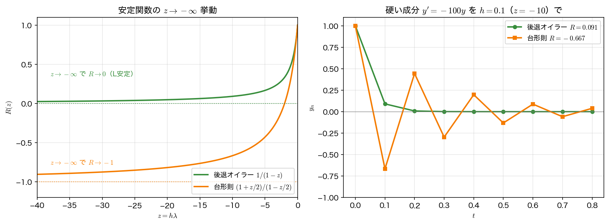

A安定とL安定
前ページで、後退オイラー法と台形則の絶対安定領域は左半平面 \(\mathrm{Re}\,z\le0\) をまるごと含むことを見た。この「左半平面を覆う」性質を正式に名づけ、さらにその中で硬い問題への向き不向きを区別するのが本ページの目的である。
A安定性
物理的に意味のある減衰問題では \(\mathrm{Re}\,\lambda<0\)（厳密解が減衰する）である。このときどんな刻み幅 \(h>0\) をとっても \(z=h\lambda\) は左半平面に入る。そこで、
A安定性（A-stability）
左半平面 \(\{\,z : \mathrm{Re}\,z\le0\,\}\) がまるごと絶対安定領域に含まれるとき、その手法は A安定 であるという。
A安定な手法は、減衰問題に対して刻み幅にいっさい制約なく安定である（数値解が発散しない）。前ページの結果から、
- 後退オイラー（円板の外側）・台形則（左半平面そのもの）は A安定。
- 前進オイラー・RK 法などの陽解法は、安定領域が有界なので左半平面全体を覆えず、A安定になり得ない。
これは陽解法の本質的な限界である。陽解法では、減衰の速い成分（\(\lambda\) の実部が大きく負）を安定に扱うために \(h\) を小さくせざるを得ない。硬い問題で A安定な陰的解法が必要になる理由がここにある（詳しくは連立系のページ）。
A安定は「テスト方程式についての」保証である
A安定性はスカラーのテスト方程式 \(y'=\lambda y\) を基準に定義されている。連立系 \(\mathbf{y}'=A\mathbf{y}\) に持ち上げられるのは \(A\) が対角化できる場合で、しかも数値解の大きさは固有ベクトル行列の条件数だけ増幅されうる。\(A\) が正規行列（対称・反対称など）なら条件数は \(1\) で額面どおり成り立つが、強く非正規な行列や非線形問題では、A安定な手法でも大きな \(h\) で解が一時的に大きく膨らむことがある。本講義で扱う対称な離散ラプラシアン（第9回）は正規なので、この心配はない。
L安定性
A安定でも、硬い成分の扱いには差がある。\(\mathrm{Re}\,\lambda\to-\infty\)（非常に速く減衰する成分）に対し、厳密解 \(e^{\lambda t}\) は瞬時に \(0\) になる。数値解がこれをどう近似するかは、\(z\to-\infty\) での安定関数 \(R(z)\) の極限で決まる。
後退オイラーは硬い成分を1ステップでほぼ消すのに対し、台形則は増幅率が \(-1\) に近づくため、硬い成分が符号を交代しながらなかなか減衰しない。この違いを区別するのが L安定性である。
L安定性（L-stability）
A安定であり、かつ \(z\to-\infty\) で \(R(z)\to0\) となるとき、その手法は L安定 であるという。
- 後退オイラー：A安定かつ \(R\to0\) → L安定。
- 台形則：A安定だが \(R\to-1\)（\(|R|\to1\)）→ L安定ではない。

第5回の台形則の符号振動の正体
第5回で、硬い問題を台形則で大きな刻みで解くと「有界だが符号が振動する」現象を見た。その正体がいま明らかになる。台形則は A安定なので \(|R(z)|\le1\)（発散はしない＝有界）だが、L安定ではないので \(z\) が大きく負のとき \(R(z)\) が \(-1\) に近づく。\(R\approx-1\) とは「毎ステップ符号を変えながらほとんど大きさが変わらない」ことであり、これが符号振動とゆっくりした減衰として現れる。下のサンプルコードで、\(z\to-\infty\) の極限と実際の時系列を確かめる。
サンプルコード
#include <stdio.h>
#include <math.h>
/* A安定 / L安定。z -> -infinity の極限:
後退オイラー R=1/(1-z) -> 0 （硬い成分が1ステップで消える = L安定）
台形則 R=(1+z/2)/(1-z/2) -> -1（符号振動しながらゆっくり減衰 = A安定だがL安定でない）*/
static double R_backward(double z){ return 1.0 / (1.0 - z); }
static double R_trapz(double z) { return (1.0 + z / 2.0) / (1.0 - z / 2.0); }
int main(void)
{
double zs[] = {-2.0, -10.0, -50.0, -100.0, -1000.0};
int nz = (int)(sizeof(zs) / sizeof(zs[0]));
printf("=== z -> -infinity での安定関数の極限 ===\n");
printf(" z 後退 1/(1-z) 台形 (1+z/2)/(1-z/2)\n");
printf("--------------------------------------------------------------\n");
for (int i = 0; i < nz; i++) {
double z = zs[i];
printf("%9.1f %16.6e %16.6f\n", z, R_backward(z), R_trapz(z));
}
printf("\n後退オイラー: R->0（L安定）。台形則: R->-1（A安定だがL安定でない）。\n");
/* 作図用: R(z) を負の実軸上で細かく刻んで書き出す */
FILE *fp = fopen("al_stability.dat", "w");
if (fp == NULL) { perror("al_stability.dat"); return 1; }
fprintf(fp, "# z R_backward R_trapezoid\n");
for (int i = 0; i <= 600; i++) {
double z = -40.0 + 40.0 * i / 600.0;
fprintf(fp, "%.10e %.10e %.10e\n", z, R_backward(z), R_trapz(z));
}
fclose(fp);
/* 非常に硬い成分 y'=-100 y を h=0.1（z=-10）で。
後退 R=1/11=0.0909, 台形 R=(1-5)/(1+5)=-2/3 */
double lam = -100.0, h = 0.1;
double z = lam * h;
double rb = R_backward(z), rt = R_trapz(z);
int N = 8;
printf("\n=== y'=%.0f y を h=%.2f（z=%.1f）で解く ===\n", lam, h, z);
printf("後退オイラー R=%.6f, 台形則 R=%.6f\n", rb, rt);
printf(" t 後退オイラー 台形則 厳密 e^{lt}\n");
printf("------------------------------------------------------------------\n");
double yb = 1.0, yt = 1.0;
fp = fopen("al_series.dat", "w");
if (fp == NULL) { perror("al_series.dat"); return 1; }
fprintf(fp, "# t y_backward y_trapezoid y_exact\n");
for (int n = 0; n <= N; n++) {
double t = n * h;
printf("%5.2f %16.6e %16.6e %12.4e\n", t, yb, yt, exp(lam * t));
fprintf(fp, "%.10e %.10e %.10e %.10e\n", t, yb, yt, exp(lam * t));
yb = rb * yb; yt = rt * yt;
}
fclose(fp);
return 0;
}
コンパイルと実行：
実行結果
=== z -> -infinity での安定関数の極限 ===
z 後退 1/(1-z) 台形 (1+z/2)/(1-z/2)
--------------------------------------------------------------
-2.0 3.333333e-01 0.000000
-10.0 9.090909e-02 -0.666667
-50.0 1.960784e-02 -0.923077
-100.0 9.900990e-03 -0.960784
-1000.0 9.990010e-04 -0.996008
後退オイラー: R->0（L安定）。台形則: R->-1（A安定だがL安定でない）。
=== y'=-100 y を h=0.10（z=-10.0）で解く ===
後退オイラー R=0.090909, 台形則 R=-0.666667
t 後退オイラー 台形則 厳密 e^{lt}
------------------------------------------------------------------
0.00 1.000000e+00 1.000000e+00 1.0000e+00
0.10 9.090909e-02 -6.666667e-01 4.5400e-05
0.20 8.264463e-03 4.444444e-01 2.0612e-09
0.30 7.513148e-04 -2.962963e-01 9.3576e-14
0.40 6.830135e-05 1.975309e-01 4.2484e-18
0.50 6.209213e-06 -1.316872e-01 1.9287e-22
0.60 5.644739e-07 8.779150e-02 8.7565e-27
0.70 5.131581e-08 -5.852766e-02 3.9754e-31
0.80 4.665074e-09 3.901844e-02 1.8049e-35
\(z\to-\infty\) で後退オイラーの \(R\) は \(0\) へ、台形則の \(R\) は \(-1\) へ近づく。\(z=-10\) の時系列では、後退オイラーは \(0.091\) 倍ずつ単調に減衰して厳密解（\(t=0.1\) ですでに \(4.5\times10^{-5}\)）に近づくが、台形則は \(-0.667\) 倍ずつ符号を変えながらゆっくり減衰する。どちらも発散しない（A安定）が、硬い成分の「消え方」が違う。
可視化
al_stab.c は2つのファイルを書き出す。al_stability.dat は \(-40\le z\le0\) での \(R(z)\)（1列目 \(z\)、2列目 後退オイラー、3列目 台形則）、al_series.dat は \(z=-10\) での時系列（1列目 \(t\)、2〜4列目が後退オイラー・台形則・厳密解）である。L安定かどうかの違いを、極限と時系列の2枚で並べて見る。
import numpy as np
import matplotlib.pyplot as plt
z, R_bwd, R_trp = np.loadtxt("al_stability.dat", unpack=True)
t, y_bwd, y_trp, y_exact = np.loadtxt("al_series.dat", unpack=True)
fig, (ax1, ax2) = plt.subplots(1, 2, figsize=(11, 4.2))
ax1.plot(z, R_bwd, label="backward Euler $1/(1-z)$")
ax1.plot(z, R_trp, label="trapezoidal $(1+z/2)/(1-z/2)$")
ax1.axhline(0.0, color="gray", ls=":", lw=1) # backward Euler の極限
ax1.axhline(-1.0, color="gray", ls=":", lw=1) # trapezoidal の極限
ax1.set_xlabel("$z = h\\lambda$")
ax1.set_ylabel("$R(z)$")
ax1.set_title("limit as $z \\to -\\infty$")
ax1.grid(alpha=0.3)
ax1.legend(loc="lower right")
ax2.plot(t, y_bwd, "o-", ms=5, label="backward Euler")
ax2.plot(t, y_trp, "s-", ms=5, label="trapezoidal")
ax2.plot(t, y_exact, "k--", lw=1.2, label="exact")
ax2.axhline(0.0, color="gray", lw=0.6)
ax2.set_xlabel("$t$")
ax2.set_ylabel("$y_n$")
ax2.set_title("$y' = -100y$ with $h = 0.1$ ($z = -10$)")
ax2.grid(alpha=0.3)
ax2.legend()
fig.tight_layout()
fig.savefig("a_l_stability.png", dpi=150)
plt.show()
実行:
左は \(z\) を負に大きくしたときの \(R(z)\) で、後退オイラーは \(0\) に、台形則は \(-1\) に貼りつく。右はその結果で、後退オイラーは1ステップで厳密解と同じ「ほぼ \(0\)」へ落ちるのに対し、台形則は \(\pm\) を交代しながらゆっくり減る。A安定（発散しない）と L安定（硬い成分が消える）は別の要求であることが、この2枚から読み取れる。
まとめ
- A安定：左半平面全体が絶対安定領域に含まれる。減衰問題で刻み幅に制約がない。後退オイラー・台形則は A安定、陽解法は安定領域が有界なので A安定になり得ない。
- L安定：A安定かつ \(z\to-\infty\) で \(R\to0\)。硬い成分を1ステップで消せる。後退オイラーは L安定、台形則は \(R\to-1\) で L安定ではない。
- 第5回で見た台形則の符号振動は、A安定だが L安定でない（\(R\to-1\)）ことの帰結である。強い減衰が要る硬い成分には後退オイラーのような L安定な手法が向き、滑らかさ・精度を重視するなら2次の台形則が向く。
- 次は 連立系の安定性と硬い問題 で、これらの安定性が現実の硬い系でなぜ決定的かを見る。